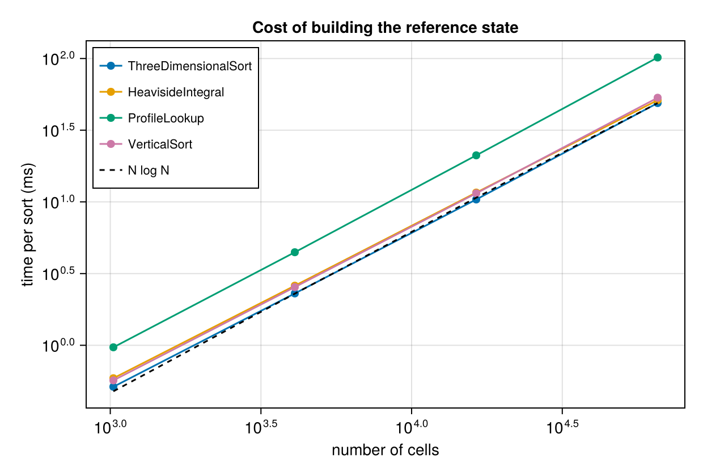

Background potential energy equation
The BackgroundPotentialEnergyEquation module builds the reference state: the arrangement of the buoyancy field with the least potential energy reachable adiabatically. Following Winters et al. (1995), rearrange the field with every parcel sorted by density and the densest fluid at the bottom. The height a parcel ends up at is its reference height $z^\star$, and the potential energy of that state is the background (or reference) potential energy,
\[e_b = -b z^\star = \frac{g \rho}{\rho_0} z^\star .\]
$e_b$ is the share of the potential energy $e_p = -bz$ of the potential energy equation that the flow cannot release. What is left over is the available potential energy, so the two modules are the two halves of one split and share the reference state built here: reference_height, reference_buoyancy and the methods below are exported by both.
The background potential energy equation
$e_p$ is $-z$ times the buoyancy with $z$ fixed, so its equation follows from the buoyancy equation cell by cell. $e_b$ is $-z^\star$ times the same buoyancy, and $z^\star$ is a functional of the whole field: it comes out of a sort, so a change anywhere in the domain can move it. There is no local $e_b$ equation in the sense the potential energy page derives one. What follows is the equation for the volume integral, which is what $E_b$ is used for anyway.
Two facts carry the derivation. The first is that $E_b$ depends on the buoyancy field only through its distribution, the volume of fluid holding each buoyancy: sorting discards where every parcel sits and keeps only how much fluid is at each value. The second is that advection moves parcels around without changing the buoyancy they carry, so it leaves that distribution untouched. Adiabatic motion therefore cannot change $E_b$ at all, however violent, and only the diffusive part of $\partial_t b$ survives (Winters et al., 1995):
\[\frac{d}{dt}\int e_b \, \mathrm{d}V = -\int z^\star \, \partial_t b \big|_\mathrm{diffusive} \, \mathrm{d}V = \int z^\star \, \partial_j q_j \, \mathrm{d}V ,\]
with $q_j$ the closure's diffusive flux of buoyancy, in the convention the potential energy page sets out. Pulling $z^\star$ inside the derivative splits that the same way, except that $z^\star$ varies through $b$ rather than through position, so $\partial_j z^\star = (\partial z^\star/\partial b)\,\partial_j b$:
\[z^\star \partial_j q_j = \partial_j (z^\star q_j) - q_j \partial_j z^\star = \partial_j (z^\star q_j) + \kappa \frac{\partial z^\star}{\partial b} \left|\nabla b\right|^2 .\]
The divergence integrates to a flux through the boundary, which vanishes for insulating walls, leaving one term:
\[\frac{d}{dt}\int e_b \, \mathrm{d}V = \int \kappa \frac{\partial z^\star}{\partial b} \left|\nabla b\right|^2 \mathrm{d}V \equiv \phi_d \ge 0 ,\]
the diapycnal mixing rate of Winters et al. It is non-negative because $z^\star$ rises with $b$, so mixing across buoyancy surfaces can only raise the background potential energy. That one-way property is what makes $\int e_b \, \mathrm{d}V$ a mixing measure, and it is also why it measures a scheme's spurious mixing: the continuous equations say advection cannot move $E_b$, so whatever motion of it survives in a simulation with no explicit diffusion came from the advection scheme.
$\phi_d$ has no diagnostic of its own, and needs none, because it splits into two that do. Writing it as $\kappa \nabla b \cdot \nabla z^\star$ and substituting $z^\star = z + \Upsilon$, with $\Upsilon$ the displacement potential,
\[\phi_d = \kappa \nabla b \cdot \nabla z^\star = \underbrace{\kappa \nabla b \cdot \nabla \Upsilon}_{\varepsilon_a} + \underbrace{\kappa \, \partial b / \partial z}_{\Phi} ,\]
the APE dissipation rate and the diffusive vertical buoyancy flux. The two split the mixing by what it costs the flow: $\varepsilon_a$ is the part paid for out of available potential energy, and $\Phi$ is the part diffusion does to the reference state on its own, which carries no available energy with it. So
\[\frac{d}{dt}\int e_b \, \mathrm{d}V = \int \left(\varepsilon_a + \Phi\right) \mathrm{d}V .\]
Neither term is sign-definite on its own; their sum is, which is the sharpest check available on either of them.
Terms and diagnostics
| Quantity | Expression | Diagnostic |
|---|---|---|
| Background potential energy | $e_b = -b z^\star$ | BackgroundPotentialEnergy |
| Reference height | $z^\star$ | reference_height |
| Advection | vanishes identically | not applicable |
| Diffusive transport | $\partial_j(z^\star q_j)$ | not implemented |
| Diapycnal mixing rate | $\phi_d = \kappa \nabla b \cdot \nabla z^\star = \varepsilon_a + \Phi$ | the sum of the two below |
| APE dissipation rate | $\varepsilon_a = \kappa \nabla b \cdot \nabla \Upsilon$ | AvailablePotentialEnergyDissipationRate |
| Diffusive buoyancy flux | $\Phi = \kappa \, \partial b / \partial z$ | DiffusiveVerticalBuoyancyFlux |
The chain rule step above assumes the reference height depends on position only through the buoyancy, which is exact in the continuum but a choice at finite resolution. It holds cell by cell for HeavisideIntegral and ProfileLookup, which give every cell of a tied run the same $z^\star$. ThreeDimensionalSort hands tied cells consecutive slots instead, so $z^\star$ spreads over the depth the run fills. That spread is the volume-weighted mean of what the other two assign, so every volume integral on this page is unaffected; only pointwise use of $\partial z^\star/\partial b$ is.
The reference state
The reference height $z^\star$ is the height a parcel would occupy in the state of minimum potential energy reachable by adiabatically rearranging the parcels of the flow, and it is computed by reference_height. Rearrangement is a nonlocal operation, so, unlike most other diagnostics in Oceanostics, this one is not a pointwise kernel. It is rearranged on each compute!, so writing it (or anything built on it) out during a simulation tracks the evolving flow.
Organizing the buoyancy against the reference height it was assigned gives the reference profile $b^\star(z^\star)$: the stratification the flow would have if all of its available potential energy were released. The Lock release example follows that profile through a gravity current, from the step it starts as to the smooth stratification mixing leaves behind, and builds it with each of the four methods below so their costs and their differences can be compared directly.
method selects one of four strategies to calculate the reference state. All methods produce the same reference state in the continuous limit and the same $\int e_a \, \mathrm{d}V$. Mainly what differs is how cells of equal buoyancy are placed, and what grid the answer lands on. Here is a brief summary of the four, with more detail in the docstring of each:
ThreeDimensionalSort(the default) ranks the cells and gives each one the height of its own slot in the sorted state, on the model grid. Tied cells take consecutive slots rather than a shared height, so $z^\star$ spreads over a grid cell wherever the stratification is horizontally uniform. Crucially, this method may leave small horizontal buoyancy gradients in the reference state, which goes against the idea of a reference state being horizontally uniform.VerticalSortis similar toThreeDimensionalSortbut returns the cells reorganized into a single column. To achieve this the cells are flattened such that their volume remains the same, but their horizontal area matches the domain's horizontal area. This has the advantage that the resulting reference state (correctly) has no horizontal structure. The downside is that the results land on a different grid, namely a $1 \times 1 \times N$ grid whose $N = N_x N_y N_z$ cells span the domain's full horizontal area.ProfileLookupgives each cell the height of the slot whose buoyancy matches its own, found by binary search into a sorted profile. Cells are matched by value rather than by identity, so it is the one method whose profile need not have come from the field being diagnosed. It reproduces on the model grid what theVerticalSortcolumn holds, without calling that method to do it.HeavisideIntegralis Eq. (11) of Winters et al. (1995) verbatim, with the Heaviside step function $H$ taking the value $1/2$ where the two densities are equal. That half-weight gives every cell of a given buoyancy the same $z^\star$, the mid-height of the layer that buoyancy class fills in the sorted column, which makes $z^\star$ a function of buoyancy alone and constant on isopycnals. Because it builds $z^\star$ from a volume fraction rather than by stacking cells into a column, it is also the only method that works on a stretched grid (one with non-uniform cell volumes).
Written out, that last one is
\[z^\star(\boldsymbol{x}) = z_\mathrm{bottom} + \frac{1}{A} \int H\!\left(\rho(\boldsymbol{x}') - \rho(\boldsymbol{x})\right) \mathrm{d}V' ,\]
with $A$ the domain's horizontal area. Taken literally that is a double integral, a sweep over the whole domain for every cell, costing $\mathcal{O}(N^2)$. Sorting the cells by buoyancy first collapses it to a cumulative sum: with the cells ordered densest first and $V_n = \sum_{p \le n} \Delta V_p$ the running total of their volumes, every cell of the tied run spanning ranks $p$ through $q$ takes
\[z^\star = z_\mathrm{bottom} + \frac{V_{p-1} + V_q}{2A} ,\]
where $V_{p-1}$ is the volume strictly denser than the parcel and $V_q$ the volume no lighter than it, the pair that $H = 1/2$ averages at equality. A single cumsum over the sorted volumes therefore serves every cell, which brings the cost back down to the $\mathcal{O}(N \log N)$ of the sort.
Computational cost per method
Sorting couples every cell in the domain to every other one, so unlike the pointwise diagnostics its cost is not linear in the number of cells. All four methods pay for the same sortperm!, which is $\mathcal{O}(N \log N)$; what separates them is the work done around it. HeavisideIntegral makes extra passes over the sorted cells to find the tied runs, ProfileLookup adds a binary search per cell, and VerticalSort carries the buoyancy and the original heights into the column.
To measure that, build the same synthetic field — a linear stratification plus noise, so no two cells are tied and the sort does its full work — on four grids spanning two decades in cell count, and time one compute! of $z^\star$ on each.
using Oceananigans, Oceanostics, CairoMakie, Randomusing Oceananigans.Fields: CenterField, compute!function noisy_field(N) grid = RectilinearGrid(size = (N, N), x = (0, 1), z = (-1, 0), topology = (Periodic, Flat, Bounded)) b = CenterField(grid) Random.seed!(42) set!(b, reshape(znodes(grid, Center()), 1, 1, N) .+ 0.1 .* randn(N, 1, N)) return bendNs = (32, 64, 128, 256)cells = collect(Ns .^ 2) # a Vector, so Makie can plot it directlymethods = ("ThreeDimensionalSort" => ThreeDimensionalSort(), "HeavisideIntegral" => HeavisideIntegral(), "ProfileLookup" => ProfileLookup(), "VerticalSort" => VerticalSort())## best of several runs, after a warm-up so compilation stays out of the measurementfunction time_sort(N, method; samples = 7) z✶ = reference_height(noisy_field(N); method) compute!(z✶) return minimum(@elapsed(compute!(z✶)) for _ in 1:samples)endtimings = Dict(name => [1e3 * time_sort(N, method) for N in Ns] for (name, method) in methods)Precompiling packages...
976.2 ms ✓ FilePathsGlobExt (serial)
1 dependency successfully precompiled in 1 seconds
Precompiling packages...
459.6 ms ✓ DistancesChainRulesCoreExt (serial)
1 dependency successfully precompiled in 0 seconds
Precompiling packages...
1050.9 ms ✓ TaylorSeriesIAExt (serial)
1 dependency successfully precompiled in 1 seconds
Precompiling packages...
6724.8 ms ✓ OceananigansMakieExt (serial)
1 dependency successfully precompiled in 7 secondsPlotted against cell count on log axes, alongside an $N \log N$ reference anchored at the largest grid:
fig = Figure(size = (620, 420))ax = Axis(fig[1, 1]; xlabel = "number of cells", ylabel = "time per sort (ms)", xscale = log10, yscale = log10, title = "Cost of building the reference state")for (name, _) in methods scatterlines!(ax, cells, timings[name]; label = name, markersize = 10)end## N log N, scaled to meet the cheapest method at the largest gridreference = cells .* log.(cells)reference = reference ./ reference[end] .* timings["ThreeDimensionalSort"][end]lines!(ax, cells, reference; color = :black, linestyle = :dash, label = "N log N")axislegend(ax; position = :lt, labelsize = 11)fig
The four curves run roughly parallel to the dashed reference, indicating that the sort is what sets the scaling. If all you need are the volume integrals, the default is the cheapest route to them.
The absolute numbers are machine-dependent, and the docs are built with different optimisation settings than a typical simulation, so read the shape of these curves rather than the values. The spread between methods in particular is narrower here than on an optimised build.
Background potential energy
Oceanostics.BackgroundPotentialEnergyEquation.BackgroundPotentialEnergy — Type
BackgroundPotentialEnergy(
model;
method,
geopotential_height,
location
)
Return a KernelFunctionOperation computing the background (or reference) potential energy per unit volume,
e_b = -b z✶ = (g/ρ₀) ρ z✶the potential energy the fluid would retain if it were rearranged adiabatically into the state of minimum potential energy (Winters et al., 1995, Eq. 22). z✶ is the reference height that rearrangement assigns to each parcel, computed by reference_height; pass one explicitly to share a single sort with AvailablePotentialEnergy, or pass method through to choose how it is built (ThreeDimensionalSort, HeavisideIntegral or VerticalSort; Integral(e_b) is the same either way).
e_b responds only to irreversible changes in the buoyancy field, so in a closed domain the continuous equations make Integral(e_b) grow monotonically at the diapycnal mixing rate. Numerically it also picks up whatever spurious diapycnal transport the advection scheme introduces, in either direction, which is what makes it a standard measure of a scheme's mixing. The remainder eₚ - e_b is the AvailablePotentialEnergy, the part that can be converted to kinetic energy. The result lives at (Center, Center, Center), per unit mass (units m² s⁻²), and is defined for the same buoyancy formulations as PotentialEnergy.
using Oceananigans, Oceanosticsgrid = RectilinearGrid(size=(4, 4, 4), extent=(1, 1, 1), topology=(Periodic, Periodic, Bounded))model = NonhydrostaticModel(grid; buoyancy=BuoyancyTracer(), tracers=:b)BackgroundPotentialEnergy(model)# outputBackgroundPotentialEnergy KernelFunctionOperation at (Center, Center, Center)├── grid: 4×4×4 RectilinearGrid{Float64, Periodic, Periodic, Bounded} on CPU with 3×3×3 halo├── kernel_function: minus_bz✶_ccc (generic function with 1 method)└── arguments: ("Field", "Field")└── computes: background potential energy per unit mass -bz✶Reference height and the methods that build it
Oceanostics.BackgroundPotentialEnergyEquation.reference_height — Function
reference_height(model; method, geopotential_height)
Return a Field holding the reference height z✶: the height each parcel would occupy once the buoyancy field is rearranged adiabatically into the state of minimum potential energy, following Winters et al. (1995). It is the building block of BackgroundPotentialEnergy and AvailablePotentialEnergy, and both accept a z✶ you built yourself so a pair of them can share one sort:
using Oceananigans, Oceanosticsgrid = RectilinearGrid(size=(4, 4, 4), extent=(1, 1, 1), topology=(Periodic, Periodic, Bounded))model = NonhydrostaticModel(grid; buoyancy=BuoyancyTracer(), tracers=:b)set!(model, b = (x, y, z) -> z)z✶ = reference_height(model) # sort the domain oncee_b = BackgroundPotentialEnergy(model, z✶) # and reuse it for both diagnosticseₐ = AvailablePotentialEnergy(model, z✶)e_b.grid === eₐ.grid === grid# outputtrueUnlike the pointwise diagnostics elsewhere in Oceanostics, z✶ is defined by a sort of every cell in the domain, and it is re-sorted on every compute!, so writing it (or anything built on it) out during a simulation tracks the evolving flow, at a cost that grows like N log N in the number of cells. It holds three Nx*Ny*Nz workspace arrays for its lifetime, and each sort allocates a handful more as temporaries: measured on 65536 cells that is 1.5 such arrays for ThreeDimensionalSort, 3.5 for VerticalSort and 5.8 for HeavisideIntegral, which builds the most intermediates. The N log N sort still dominates the runtime, so this shows up as allocation churn rather than as wall-clock.
An ImmersedBoundaryGrid is rejected for every method: the sort weights each cell by its full volume, so immersed cells would be stacked into the reference state as if they held fluid. Topography is not supported yet. On a stretched grid (non-uniform cell volumes) only HeavisideIntegral runs, since it builds z✶ from a volume fraction; the three methods that stack cells into a column need uniform cells and throw.
method picks how the sorted state is built. Sorting the field itself, all four give the same ∫eₐ dV in the continuous limit, but have different limitations due to the discretization:
ThreeDimensionalSort(the default) gives each cell the height of its own slot in the sorted column, on the model grid. Tied cells take consecutive slots, which spreadsz✶over a grid cell wherever the buoyancy is uniform.HeavisideIntegralis Eq. (11) of Winters et al. verbatim, also on the model grid. Tied cells share the mid-height of their layer, soz✶is a function of buoyancy alone and a cell-by-cell map is clean. Use this one for local fields.ProfileLookupgives each cell the height of the slot whose buoyancy matches its own, found by binary search into the sorted profile, on the model grid. It is the column below read back onto the model grid, matched by value rather than by cell identity, so it is the one method that does not need the profile to have come from the field being diagnosed. Tied cells share the mid-height of their run, which makesz✶a function of buoyancy alone as above.VerticalSortreturns the sorted column itself, on a1×1×Ngrid of cells that span the domain's horizontal area, which is the form to use for a reference profile.
Where they differ is z✶, and so e_b: the placement of tied cells is the only freedom they have, and eₐ is blind to it, since a cell's z✶ always lands inside the run of slots its own buoyancy fills and the reference profile is flat across that run.
using Oceananigans, Oceanosticsgrid = RectilinearGrid(size=(4, 4, 4), extent=(1, 1, 1), topology=(Periodic, Periodic, Bounded))model = NonhydrostaticModel(grid; buoyancy=BuoyancyTracer(), tracers=:b)set!(model, b = (x, y, z) -> z)# with Eq. (11), a horizontally uniform stable stratification is exactly its own sorted statez✶ = reference_height(model, method=HeavisideIntegral())interior(z✶) ≈ reshape(znodes(grid, Center()), 1, 1, 4) .* ones(4, 4, 4)# outputtruegeopotential_height is passed through to seawater_density exactly as in PotentialEnergy, and defaults the same way, so the two diagnostics always sort and weight the same density. With a nonlinear equation of state, prefer a fixed value (geopotential_height = 0 for σ₀): sorting is only meaningful for a variable the flow conserves, which in-situ density is not.
A second method, reference_height(b::Field), sorts a Field you supply instead of the model's buoyancy, which is what you want for a reference state built from a filtered buoyancy filter(b). It sorts in ascending order, so b has to be buoyancy-like (large where the fluid is light); pass -ρ rather than ρ for a density.
using Oceananigans, Oceanosticsgrid = RectilinearGrid(size=(4, 4, 4), extent=(1, 1, 1), topology=(Periodic, Periodic, Bounded))model = NonhydrostaticModel(grid; buoyancy=BuoyancyTracer(), tracers=:b)set!(model, b = (x, y, z) -> z)z✶ = reference_height(model)# a stably stratified field is already sorted, so z✶ stays within half a cell of zmaximum(abs, interior(z✶) .- reshape(znodes(grid, Center()), 1, 1, 4)) <= 0.5 * 0.25# outputtrueOceanostics.BackgroundPotentialEnergyEquation.reference_buoyancy — Function
reference_buoyancy(z✶)
Return the buoyancy Field that pairs with the reference height z✶ cell by cell, so that (z✶, reference_buoyancy(z✶)) is the reference profile the sort produced.
Under VerticalSort that is the sorted profile b✶ living on the column alongside z✶. Under ThreeDimensionalSort and HeavisideIntegral it is the model's own buoyancy, which already pairs with z✶ cell by cell since both live on the model grid; ordering those pairs by z✶ recovers the same profile the column stores directly.
The returned field recomputes itself, so it is safe to hand straight to an output writer: computing it sorts the parent z✶ if that has not already happened at this time. It shares its data with the column the sort fills, so it costs no extra memory and stays consistent with z✶ by construction.
Oceanostics.BackgroundPotentialEnergyEquation.reference_buoyancy_at_height — Function
reference_buoyancy_at_height(z✶)
Return a Field holding b✶(z), the buoyancy the adiabatically sorted reference profile carries at each cell's own height. It is what a parcel would have to be to sit where it does without any available potential energy, so the difference from the buoyancy it actually carries is the anomaly ReferenceBuoyancyAnomaly returns.
This is a different quantity from reference_buoyancy, which pairs the profile with the reference height z✶ instead: b✶(z✶) is the parcel's own buoyancy, and on the model grid reference_buoyancy hands back the buoyancy field itself.
The returned field recomputes itself, so it is safe to hand straight to an output writer: computing it sorts the parent z✶ if that has not already happened at this time, and then reads the profile off that sort rather than repeating it. It answers on the grid z✶ lives on, which for VerticalSort is the sorted column rather than the model grid.
This method reads the profile a reference height already produced. The (grid, profile) method below takes the profile itself instead, and reads it onto any grid, which is what a diagnostic measuring one field against another field's reference state needs.
reference_buoyancy_at_height(grid, profile)
Return a Field holding b✶(z): the buoyancy the adiabatically resorted reference state carries at each cell's own height, rather than at the reference height reference_height sends that cell's buoyancy to. It is the inverse of that map, b✶ being defined implicitly by z✶(b✶(z)) = z, and it is what turns a buoyancy into an anomaly against the reference state, b_r = b - b✶(z).
profile is the reference profile to read, in any of the forms ProfileLookup accepts a profile in: a reference height built with VerticalSort, which is recomputed first so the profile tracks the flow, or a (b✶, z✶) pair of arrays held fixed. Handed a reference height on the model grid instead, use the single-argument method above, which reads the profile off that sort directly and needs no slot geometry rebuilt from it. The profile is a stack of slots, each holding one buoyancy class, and a cell reads the slot its own height falls in.
The result lives at (Center, Center, Center) on grid, in units of buoyancy (m s⁻²). Being a lookup rather than a sort it is O(N log M) per compute!, cheaper than the reference height itself.
Oceanostics.BackgroundPotentialEnergyEquation.AbstractReferenceHeightMethod — Type
abstract type AbstractReferenceHeightMethodSupertype of the four strategies reference_height offers for turning a buoyancy field into a reference height: ThreeDimensionalSort, HeavisideIntegral, ProfileLookup and VerticalSort.
Oceanostics.BackgroundPotentialEnergyEquation.ThreeDimensionalSort — Type
struct ThreeDimensionalSort <: Oceanostics.BackgroundPotentialEnergyEquation.AbstractReferenceHeightMethodGive every cell the height of its own slot in the sorted column: rank the cells by buoyancy, stack them from the bottom of the domain, and read off where each one lands. z✶ comes back on the model grid, which is what the name contrasts with VerticalSort; note that HeavisideIntegral also answers on the model grid and differs over ties instead. This is the default.
Cells that share a buoyancy take consecutive slots rather than a shared height, so z✶ spreads over the depth the tied group fills, which is half a cell either side of z for a horizontally uniform stratification. That spread is the volume-weighted mean of what HeavisideIntegral assigns, so every volume integral agrees with it exactly, but it does make a cell-by-cell map of z✶ noisy at the grid scale wherever the buoyancy is uniform.
Oceanostics.BackgroundPotentialEnergyEquation.HeavisideIntegral — Type
struct HeavisideIntegral <: Oceanostics.BackgroundPotentialEnergyEquation.AbstractReferenceHeightMethodEvaluate the reference height as Winters et al. (1995) define it in their Eq. (11),
z✶(x) = z_bottom + (1/A) ∫ H(ρ(x′) - ρ(x)) dV′ ,where H is the Heaviside step function, taking the value 1/2 where the two densities are equal. That half-weight makes every cell of a given buoyancy share one z✶, the mid-height of the layer that buoyancy class occupies in the sorted column, so z✶ is a function of buoyancy alone and is constant on isopycnals. z✶ comes back on the model grid.
Prefer this to ThreeDimensionalSort when you want a cell-by-cell map: a horizontally uniform, statically stable stratification gives z✶ = z exactly here, hence eₐ = 0 cell by cell rather than only in the integral. It costs a couple of extra passes over the sorted cells to find the tied runs.
Oceanostics.BackgroundPotentialEnergyEquation.ProfileLookup — Type
struct ProfileLookup{P} <: Oceanostics.BackgroundPotentialEnergyEquation.AbstractReferenceHeightMethodGive each cell the height of the slot whose buoyancy matches its own, found by a binary search into a sorted reference profile. z✶ comes back on the model grid.
A cell is matched to the profile through its buoyancy, never through where it came from, so the profile does not have to be the one this field would produce by sorting itself. Three ways to supply it:
ProfileLookup()sorts the field's own buoyancy, exactly as the other methods do. This reproduces the samez✶those methods assign, up to which slot of a tied run is picked.ProfileLookup(z✶_column)takes the profile from a reference height built withVerticalSort, and reads it back onto the model grid. The column is recomputed first, so the profile still tracks the flow.ProfileLookup(b✶, z✶)takes any paired buoyancy and height, ordered from the densest fluid up, and does no sorting at all. Pass arrays to hold the reference state fixed while the flow evolves; they are moved to the model's architecture when the diagnostic is built, so a plainVectorworks on a GPU. PassFields and they are recomputed on everycompute!instead, so the profile tracks whatever they are built from rather than staying fixed.
Like HeavisideIntegral this makes z✶ a function of buoyancy alone, so it is constant on isopycnals: a tied run is placed at the mid-height of the band it fills, exactly as that method does. A buoyancy that matches no entry of the profile (which only an external profile can produce, e.g. a filtered field looked up in the full field's profile) is assigned to the nearest buoyancy class and placed at that class's mid-height, so a value off the profile by roundoff lands exactly where an exact match would.
eₐ ≥ 0 rests on a parcel carrying b = b✶(z✶) exactly, which holds when the profile contains the buoyancies the field actually has. A profile sorted from the same field at the same time always does, so ProfileLookup() and ProfileLookup(z✶_column) are safe. For other profiles eₐ cannot be guaranteed to be non-negative.
All three forms describe the same reference state when the profile comes from the field being diagnosed:
using Oceananigans, Oceanosticsusing Oceananigans.Fields: compute!, interiorgrid = RectilinearGrid(size=(4, 4, 4), extent=(1, 1, 1), topology=(Periodic, Periodic, Bounded))model = NonhydrostaticModel(grid; buoyancy=BuoyancyTracer(), tracers=:b)set!(model, b = (x, y, z) -> z)# sort the field's own buoyancyz✶ = reference_height(model, method=ProfileLookup())# borrow the column VerticalSort builds; it is recomputed alongside, so it tracks the flowz✶_column = reference_height(model, method=VerticalSort())z✶_borrowed = reference_height(model, method=ProfileLookup(z✶_column))# any paired (b✶, z✶), here a snapshot of that column held fixed in timecompute!(z✶_column)b✶ = vec(interior(reference_buoyancy(z✶_column)))z✶_profile = vec(interior(z✶_column))z✶_fixed = reference_height(model, method=ProfileLookup(b✶, z✶_profile))interior(z✶) ≈ interior(z✶_borrowed) ≈ interior(z✶_fixed)# outputtrueOceanostics.BackgroundPotentialEnergyEquation.VerticalSort — Type
struct VerticalSort{B, H} <: Oceanostics.BackgroundPotentialEnergyEquation.AbstractReferenceHeightMethodReturn the sorted column itself, on its own 1×1×N grid with N = Nx*Ny*Nz cells that span the domain's full horizontal area. The cells are reshaped rather than re-counted: each holds the same volume as a cell of the model grid, so volume integrals over the column match those over the model grid, and z✶ is simply the column's own cell centers. The column keeps the model grid's topology, collapsing each horizontal direction to a single cell, so a Flat direction stays Flat rather than turning into a spurious periodic axis in any output.
This is the representation to reach for when you want the reference state as a profile, say to plot b✶(z✶) or to differentiate it into a reference stratification. The parcels' original positions are carried along, so AvailablePotentialEnergy still works, but its result is indexed by rank in the sorted column rather than by position in the flow. Requires every cell of the model grid to hold the same volume, since otherwise the column's cell boundaries would move as the flow evolves.